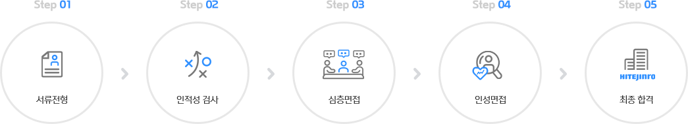
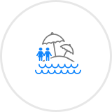
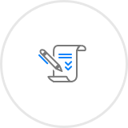
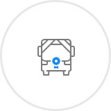
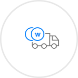
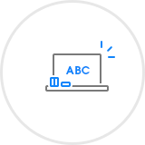
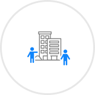
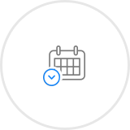
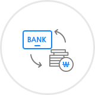

하이트진로 주요서비스
Login
하이트진로 검색
Recruit
All about HITEJINRO
최고가 되고자 하는 의지, 뜨거운 열정이 당신을 기다립니다.
대한민국 주류의 역사, 하이트진로에서
세계 기업을 향해 힘차게 도약할 우수한 인재를 모집합니다.
최고가 되고자 하는 의지,
뜨거운 열정이 당신을 기다립니다!
기쁠 때나 슬플 때나 국민과 함께하며 우리나라를 대표하는 주류회사, 하이트진로
하이트진로는 모든 것에 최우선으로 고객만족을 생각하는 가장 인간적이고 친근한 기업이며,
1924년부터 지금까지 대한민국과 세계 곳곳에서 사랑받고 있는 대한민국 주류의 역사라
할 수 있습니다.
이제 술은 우리의 생활 속 하나의 문화입니다.
100년 기업의 내공을 바탕으로 소비자의 공감을 이루어내고, 끊임없는 개발과 품질에
대한 노력으로 바른 주류 문화를 선도하고자 합니다. 국민기업에서 세계기업으로 도약하는
우리의 끊임없는 도전에 함께 할 가능성이 무궁무진한 인재들을 기다리고 있습니다!
- HR팀

HITEJINRO 人
인재상
하이트진로가 바라는 인재상은 5가지 핵심가치의 역량에서 출발합니다.
열정과 헌신, 창의를 추구하고 실천하는 참된 인재를 기다립니다.
열정
회사의 정통성에 대한 이해를 토대로
패러다임을 바꿀 수 있는 열정적인 인재
헌신
나보다는 우리를, 우리보다는
고객을 먼저 생각하는 헌신적인 인재
창의
실패를 두려워하지 않고, 새로운
도전을 시도하는 창의적인 인재
MANAGEMENT PHILOSOPHY
경영이념
하이트진로㈜는 1924년부터 지금까지 대한민국과 세계 곳곳에서 사랑 받고 있는 대한민국의 주류의 역사라 할 수 있습니다.
"세계 모든 이들과 늘 함께하며, 삶의 즐거움과 희망을 나눈다."
고객 · 사회 헌신
창조적 혁신
정통 · 대표성 계승
신뢰와 겸손
소통과 화합
핵심가치 5
고객 · 사회 헌신, 창조적 혁신, 정통 · 대표성 계승, 신뢰와 겸손,
소통과 화합은 하이트진로의 중요한 핵심가치입니다.
직무소개
하이트진로㈜의 직무를 소개합니다. 관리지원 / 영업 / 연구 / 생산 / 현장직 5개의 직군에서 총 75개의 직무로 분류되는 직무 세부내용을 안내드립니다.
-
관리지원 하이트진로의 관리지원을 책임지고있습니다.
- · 전략기획 · 경영관리 · 재무기획 · 경영혁신 · 신사업개발 · 경영지원 · 총무 · 관재 · 윤리감사 · 홍보 · 문화 · 법무 · 정책 · 물류 · 비서 · 사회공헌 · SCM · 회계 · 재무 · IR · 인사 · 교육 · 노사협력 · IT기획 · IT시스템 · 정보시스템운영개발 · 시장전략 · 브랜드관리 · 광고
-
영업 하이트진로 물류의 영업, 유통, 고객지원을 책임지고 있습니다.
- · 영업기획 · 유통전략 · 영업지원 · 채권관리 · 지점관리 · 해외사업지원 · 해외영업 · 고객지원 · 고객서비스 · 일반영업 · 특판영업 · 수퍼영업 · 특수거래선 영업 · 프랜차이즈(FC) 영업 · 유통영업
-

생산 제품, 품질, 안전,혁신을 책임지고있습니다.
- · 생산기획 · 품질혁신 · 구매 · 제조 · 제품 · 업무지원 · 소주 생산지원 · 맥주 생산지원 · 설비 · Utility · 안전환경보건 · 품질
-
연구 질좋은 술을 위한 연구는 계속 됩니다.
- · 연구지원 · 연구기획 · 분석화학 · 기초연구 · 생물공학 · 증류수개발 · 맥주개발 · 기재주개발 · 생산기술 연구 · 신제품개발
-
현장직 주류 생산의 1선을 책임지고있습니다.
- · 제조 · 제품 · 업무지원 · 소주 생산지원 · 맥주 생산지원 · 설비 · Utility · 환경 · 품질
채용절차
하이트진로㈜의 미래를 함께 할 인재채용은 공개채용 및 수시채용을 통해 이루어집니다.

01
서류전형
· 서류접수는 하이트진로 온라인 채용 홈페이지에서 접수 가능합니다.
· 하이트진로 서류 전형은 당사 핵심가치 및 역량을 기반으로 심사가 이루어지며, 자기소개서를 중점적으로 검토합니다.
02 인적성 검사 · 인적성 검사를 통해 기본적인 인성과 직무능력을 확인합니다.
03
심층면접
· 심층면접은 실무진(팀/지점장급)으로 면접관이 구성되며, 직무역량을 종합적으로 평가합니다.
· 심층면접에서는 실무진면접, 토론면접, 선배와의 대화 총 3가지로 이루어집니다.
- 실무진면접 : 실무진면접에서는 직무에 대한 전문성을 검증합니다.
- 토론면접 : 토론면접에서는 기초적인 시사상식 외에 태도, 자세 등을 심층적으로 검증합니다.
- 선배와의 대화 : 선배와의 대화는 최근 입사한 선배와 지원자를 매칭하여 캐주얼한 식사자리로서 편안한 분위기에서 음주매너 및 태도 등을 검증합니다.
04 인성면접 · 인성면접은 임원으로 면접관이 구성되며, 인성 및 기본역량을 다각도로 평가합니다.
05 최종합격
복리후생
하이트진로㈜는 임직원의 삶의 질을 높이고, 개인의 발전을 이룰 수 있도록 다양한 방법으로 지원해드리고 있습니다.
-

장기근속 포상 근속기간에 따른 금지원, 포상휴가
및 부부동반 해외여행 -

선택적 복지제도 복지카드 제공 -
경조비/경조휴가
본인 및 가족의 결혼, 회갑, 고희, 사망 등
경조 발생 시 경조휴가, 경조비, 경조물품 제공 -
건강검진/의료비
임직원 및 배우자 단체상해보험 가입,
건강검진, 임직원 및 가족 의료비 보조 -

상조 서비스 제공 임직원 직계 가족 조사 발생 시
상조 서비스 제공 -
자녀 학자금
취학 전, 초, 중, 고, 대학교
교육 보조비 및 학자금 지원 -

영업 활동비 지원 영업차량, 영업 활동비, 통신비, 유류비,
주차 통행료 등 영업 활동사항 전반 지원 -

자기계발 지원 사내어학당, 스마트러닝, 동아리,
사이버 아카데미 등 지원 - 직원고충처리(EAP) 임직원 고충관련 전문 상담 서비스 제공
-

여가생활 지원 하계 휴양소 및 콘도지원, 부서내
송년/체육행사 등 지원 -

휴가/휴일제도 법정휴가(연차), 창립기념일/노조창립일
휴가, 보건휴가 등 휴가 사용 -

사내금고운용 저축 및 저금리 대출
채용공고
대한민국 주류의 역사, 하이트진로에서 세계 기업을 향해 힘차게 도약할 우수한 인재를 모집합니다.
Total2
지원자도우미
하이트진로㈜ 채용에서 지원자들이 주로 궁금해하는 사항을 선정하여 알려드립니다.
- Q. 대졸 신입사원 모집시 지원자격(나이, 성별, 학력, 병역 등)에서 제한이 있나요?
-
A. 대졸 신입사원은 4년제 정규대학 졸업자 혹은 졸업예정자를 대상으로 하는 공개채용으로서, 나이, 성별, 병역 등에 제한은 없습니다.
군필 또는 면제자로서 해외여행에 결격사유가 없다면 누구나 지원 가능합니다. - Q. 과거 하이트진로에 입사지원하여 불합격했던 경우 재지원시 불이익이 있나요?
-
A. 과거 전형 이력이 불합격이었다는 점으로 인한 불이익은 없습니다.
얼마든지 본인의 역량을 개발하여 재지원한다면, 합격할 수 있습니다. - Q. 서류전형시 어학점수(토익 등)나 학점에 대한 커트라인이 있나요?
-
A.어학점수 및 학점에 대한 커트라인은 없습니다.
소위 스펙이라 말하는 어학점수, 학점 등은 서류전형에서 당락을 결정하는 절대적 기준이 아닙니다.
하이트진로는 어학점수나, 학점 같은 수치적 스펙보다는 자기소개서 내의 정보를 통해 가치관/역량/직무 이해도 등을 종합적으로 평가하여
합격 여부를 판단하고 있습니다.
단, 직무에 따라 반드시 필요한 사항은 사전에 채용공고문에 안내드립니다. - Q. 대졸 신입사원의 연봉수준과 복리후생이 궁금합니다.
-
A.대졸 신입사원 초임 연봉은 매년 경영 성과에 따라 차이가 있지만, 국내 식음료업계에서는 높은 수준이라고 자부하고 있습니다.
기본연봉 외에 경영성과급, 목표성과급, 개인성과급 등을 제공하고 있으며 복리후생은 당사 복리후생 페이지에 자세히 기재되어 있으니 참고 부탁드립니다. - Q. 복수전공, 부전공도 인정이 되나요?
-
A.복수전공, 부전공도 전공으로 인정하고 있습니다.
단, 증빙서류 제출 후 확인 절차를 거쳐 입력사항과 다를 경우 불이익을 받을 수 있습니다. - Q. 진행 중인 채용공고에서 여러 개의 직무로 중복지원이 가능한가요?
- A.한 회의 채용공고에서 여러 개의 직무로 중복지원은 불가합니다. 단. 1순위, 2순위로 원하시는 직무 선택은 가능합니다.
- Q. 온라인 접수시 제출서류는 별도로 제출하지 않나요?
-
A.입사지원서 작성 시에는 당사 온라인 채용사이트(http://dream.hitejinro.com)에서 입사지원서 및 자기소개서만 등록하시면 됩니다.
추가적인 제출서류는 면접 진행시 대상자에게 개별 통보로 안내드립니다. - Q. 석사학력이 인정되나요?
- A.석사로 입사 시에는 그에 따른 승진 포인트가 주어짐에 따라 인정되고 있습니다.
- Q. 지원하는 직무와 전공이 상이합니다. 그래도 지원가능한가요?
-
A.지원 가능합니다.
하지만, 직무와 관련된 전공지식이 필요할 수 있으니 지원 직무에 대한 전문성과 역량을 입사지원서 또는 면접을 통하여 보여주시면 됩니다.
단, 전공이 제한되는 전문 직무(연구, 품질 등) 채용 시에는 사전에 채용공고문에 필수 전공을 표기해 드립니다. - Q. 보훈대상자에게 가산점이 있나요?
- A.보훈대상자는 관계법령에 의거 우대하고 있습니다.
- Q. 과거 경력이 있습니다. 이런 경우에도 신입으로 지원 가능한가요?
- A.네. 과거 경력이 있어도 신입사원으로 지원 가능하며, 입사 후에는 신입으로 처우가 결정됩니다.
- Q. 전형 단계별 발표는 어떻게 이루어지나요?
- A.SMS, 메일, 홈페이지 게시 등을 통해 발표를 하고 있으며, 필요시 유선연락도 드립니다.
- Q. 불합격자에게도 연락을 주시나요?
-
A.네. 합격자, 불합격자 모두 한 명 한 명 우리의 소중한 고객입니다.
한정된 인원의 채용으로 인하여 안타깝게 불합격 되신 분들에게도 개별 안내를 모두 드리고 있습니다.